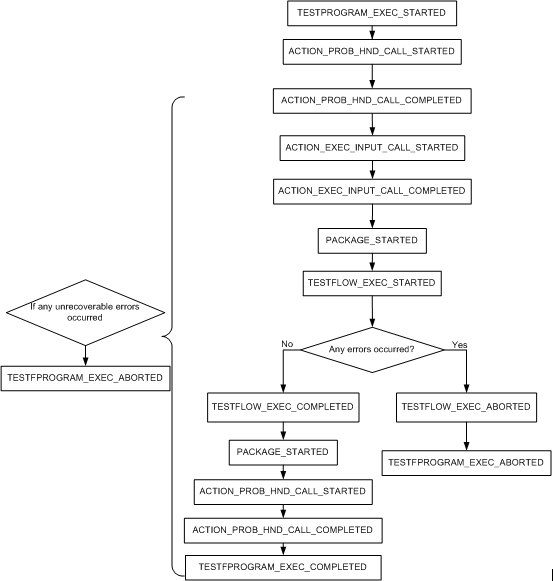

ExecTestflow
This command tries to execute a test flow that has been downloaded to the test system.
When the test flow is started to execute, the event
TESTFLOW_EXEC_STARTED is notified. When the execution is finished, the event
TESTFLOW_EXEC_COMPLETED is notified.
The typical sequence the HVM events may be generated during the test program execution is shown in the figure below.

SUCCESS will be returned if the command is successfully issued. Otherwise an error object indicating the error code, description and severity will be returned.
Code |
Description |
Severity |
|---|---|---|
PARAMETER_EXCEPTION |
|
RECOVERABLE |
ILLEGAL_OPERATION |
|
RECOVERABLE |
Dependency and Constraints
- There should be a testflow downloaded.
- The test program or the testflow is not in the execution.
Parameters
I/O |
Parameter |
Description |
|---|---|---|
I |
SESSION_ID |
The ID of the SmarTest session to work with. |
I |
SITE_ID_FOR_SITES |
The list of site IDs. |
I |
SITE_SETUP_FOR_SITES |
The list of site setup. There are two options for device setup |
Prototype
ParamList cmdParams;
string sessionId;
Status command("ExecTestflow", cmdParams, sessionId);Example
//Execute a test flow contained in the test program that is already downloaded
ParamList cmdParams;
Vector<string> list;
list = split("1 2 3 4", " ");
cmdParams.setValueArray("SITE_ID_FOR_SITES", list);
list = split("I I I I", " ");
cmdParams.setValueArray("SITE_SETUP_FOR_SITES", list);
command("ExecTestflow", cmdParams, sid); /* sid is a session ID */split() is a user defined function to split the string into
separate characters. This function is not provided in the HVM API library. You can define your
own function to implement this capability.